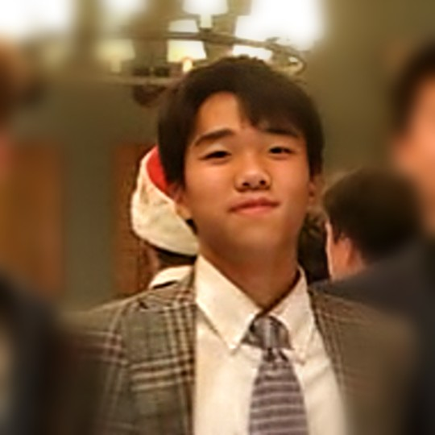

Hi, I'm Jungbin
Most people call me JB. I'm a senior at The Thacher School in Ojai, California.
I like questions that start outdoors and end in code: why kelp forests thin out after a warm season, where animals get hit trying to cross roads, how well a program can find a pattern in DNA after it has mutated. I work mostly in R and Python with public datasets.
A lot of that curiosity comes from the water. Diving in the Channel Islands is what got me into kelp in the first place. I'm a Divemaster and Rescue Diver now, and for the past two summers I've worked as an assistant dive instructor in South Korea and the Philippines, helping more than 100 people through their first Open Water dives.
Back on land, I've been keeping bees since sophomore year, and I paint in watercolor on Korean hanji paper, mostly animals, plants, and the ocean.
I also play soccer and run sprints for Thacher, and I've qualified for the AIME in competition math. I speak English and Korean, and I'm working on my Spanish and Chinese.
Say hello
The best way to reach me is email: jungbinyoon2009@gmail.com